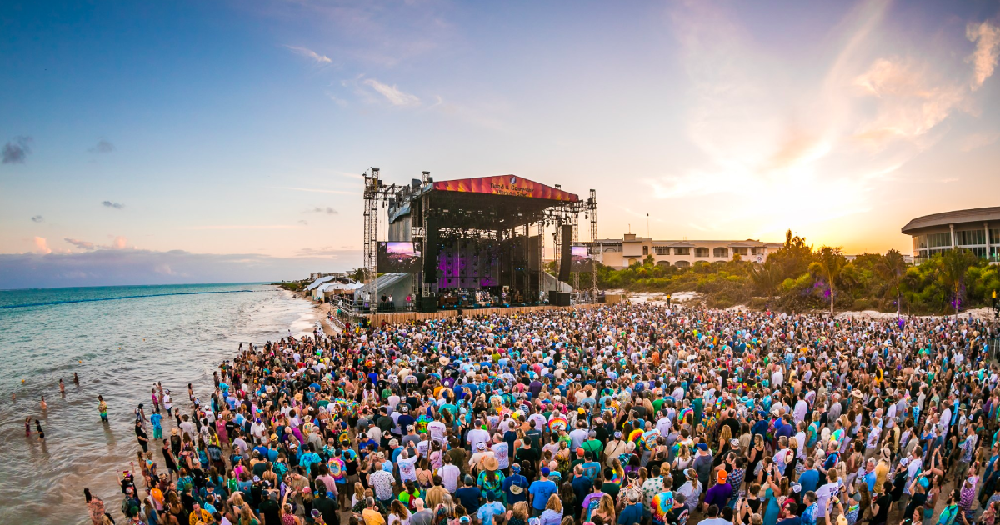

Dead & Company is an American rock band. It formed in 2015 with a lineup of former Grateful Dead members Bob Weir (guitar and vocals), Mickey Hart (drums), and Bill Kreutzmann (drums), along with John Mayer (guitar and vocals), Oteil Burbridge (bass, percussion, and vocals),[1] and Jeff Chimenti (keyboards).[2][3][4] In 2023 Jay Lane replaced Kreutzmann as the band's second drummer for their final tour.[5] After finishing the "Final Tour," John Mayer reassured fans that "Dead & Company is still a band," but that they did not "know what the next show will be."[6]
Mayer recounts that in 2011 he was listening to Pandora and happened upon the song "Althea" by the Grateful Dead, and that soon Grateful Dead music was all he would listen to.[7] In February 2015, while Mayer was guest hosting The Late Late Show, he invited Grateful Dead guitar player Bob Weir to join him in a studio performance. A bond developed between the two, and while Weir and the other three surviving core members of the Grateful Dead were preparing for their 50th anniversary shows, dubbed Fare Thee Well, Mayer began practicing the band's large catalog of songs. That August, Mayer and original Grateful Dead members Weir, Hart, and Kreutzmann formed the band, along with keyboardist Jeff Chimenti (Furthur, RatDog) and bassist Oteil Burbridge (Allman Brothers Band, Aquarium Rescue Unit). Mayer expressed a particularly strong enthusiasm toward playing with the new band.[8][9] Phil Lesh, the bassist for the Grateful Dead, did not join Dead & Company. Instead he continued to perform with his band Phil Lesh and Friends.[10][11] Mike Gordon of Phish was pursued for the bassist role but had to withdraw due to being too busy with other matters.[8]
Dead & Company initially announced only one concert date on October 31, 2015, at Madison Square Garden in New York but announced a full tour shortly afterwards.[12] The shows were called "magical" (Billboard) and the tour was very well received.[13]Following the band's final 2015 performance on December 31, 2015, Mayer told fans that they could expect more Dead & Company concerts in 2016 and this was confirmed by Weir when he was interviewed on Periscope.[14] The band initially had one performance confirmed for 2016 at the Bonnaroo Music Festival[15] but announced a full summer tour on February 8, 2016.[13][16] On February 18, 2016, the band performed on The Tonight Show with Jimmy Fallon to promote the tour.[17]
In 2016, Mayer and Weir expressed strong optimism about the band's future, including the possibility of new studio recordings. Mayer said he "will never close the door on Dead & Company, ever."[18]When Dead & Company played their first festival performance at the 2016 Bonnaroo Music Festival, former Grateful Dead vocalist Donna Jean Godchaux sat in with the band for several songs. She joined the band again for their shows at Citi Field in Flushing, NY on June 25 and 26, 2016, and at Fenway Park in Boston, MA on July 15 and 16, 2016.
On December 1, 2016, Dead & Company officially announced their 2017 Summer Tour.[19] The tour began on May 27, 2017, and wrapped up on July 1, 2017. The tour consisted of 20 shows in 15 cities. In a 2017 interview with Rolling Stone, Phil Lesh praised the band's performances, saying "I think they're doing a great job. They're bringing the music to the people just like we always wanted to do, and I commend them for it. I hope they're having a good time. It's not something I could do myself. I'm done with that kind of touring."[20] On September 7, 2017, Dead & Company officially announced their Fall Tour 2017.[21] The tour began on November 12, 2017, and was scheduled to wrap up on December 8, 2017. However, on December 5, Mayer was hospitalized for an emergency appendectomy, which postponed the New Orleans show that night. Dead & Company subsequently postponed the remaining tour dates, rescheduling them in February, following several independent shows in Mexico. The Fall Tour consisted of 16 shows in 14 cities.
On May 30, 2018, the band began their 2018 summer tour, originally set to end on July 14[22] but extended to include two shows at the Lockn' Festival on August 25 and 26.[23][24] On February 15, 17 and 18, 2018, the band kicked off their inaugural Playing In The Sand concerts at the Barceló Maya resort in Riviera Maya, Mexico.[25]
From May 31 to July 6, the band played their 2019 Summer Tour. They performed 19 concerts at 14 locations across the U.S.[26][27] The band played a short fall tour in New York City on October 31 and November 1 followed by 2 shows at Uniondale's Nassau Coliseum on November 5 and 6. They then moved south to Hampton, Virginia on November 8 and 9.[28] On December 27 and 28, they played at The Forum in Inglewood (Los Angeles), California as part of their "Fun Run" tour. On December 30 and 31, they played in their hometown of San Francisco at the Chase Center, featuring a bi-plane that descended from the ceiling of the Chase Center carrying the daughters of Jerry Garcia, Trixie Garcia and her half-sister, Ken Kesey's daughter Sunshine Kesey, dropping rose petals on the audience as they toured the arena.[29][30]
In January 2020, Dead & Company played three concerts as part of the "Playing in the Sand" event at the Moon Palace resort in Cancún, Mexico.[31] The band planned on performing at New Orleans Jazz Fest[32] and to embark on a 2020 Summer Tour, consisting of 17 dates at 14 locations from July 10 to August 8, all of which were cancelled due to the COVID-19 pandemic.[33]
The band played a national tour in August through October 2021.[34][35] Jay Lane joined Dead & Company as stand-in drummer while Bill Kreutzmann recovered from a non-COVID respiratory illness for their October 19 and 20, 2021 shows at Red Rocks in Morrison, CO, their October 22 and 23 shows at Fiddler's Green in Greenwood Village, CO, and their October 31 show at the Hollywood Bowl in Los Angeles.[36][37]
Dead & Company were scheduled to play six concerts on January 7, 9, 10, 13, 15, and 16 at the Playing in the Sand festival at the Moon Palace resort in Cancun. However on January 6 the shows were cancelled due to a surge in cases of COVID-19.[38][39] In June and July 2022, the band played a 20-concert summer tour with only one concert being cancelled at Saratoga Performing Arts Center in Saratoga Springs, NY due to emergency health concerns with Mayers father.[40][41][42]
The band continued their tradition of "Playing in the Sand" shows at a resort in Cancún from January 14 to 17, 2023.[43][44] On September 23, 2022, the band announced that their Summer 2023 concert series would be their final tour.[45] On October 6, 2022, they revealed the tour schedule, to run from May 19 through July 16, 2023.[46][47] On April 22, 2023, it was announced by the band that Kreutzmann would not be performing or touring with Dead & Company during their final tour, due to a "shift in creative direction".[48] On May 6, 2023, Dead & Company performed at the New Orleans Jazz & Heritage Festival, with Jay Lane replacing Bill Kreutzmann in the lineup.[49] On May 8 the band played at Barton Hall in Ithaca, New York, the 46th anniversary of the Grateful Dead's May 8, 1977 concert at that venue.[50] On May 19 they played the first concert of their spring and summer tour.[51] At 10:32 pm PST on July 16, 2023, Dead and Company played their last verse of the tour: "Not Fade Away" (reprised from the July 14th, 2023 concert at Oracle Park) to conclude their 8 years of touring.In an interview with ABC published on June 22, 2023, Hart left the door open for future Dead & Company shows, explaining, "“It’s not final anything. We never said we’ll never play again, but we’ll never tour again.”[52]
The band has not released any studio recordings. Concert recordings from their 2016 to 2023 tours are available through their website, Livedead.co, and streaming on nugs.net and other major platforms.[53]
This webpage is created by Ava Knopping Wikipedia Source